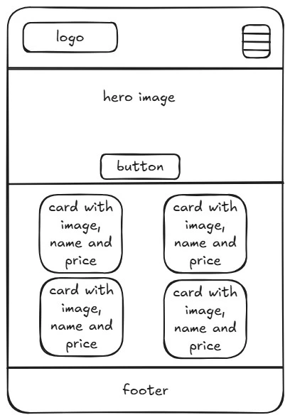
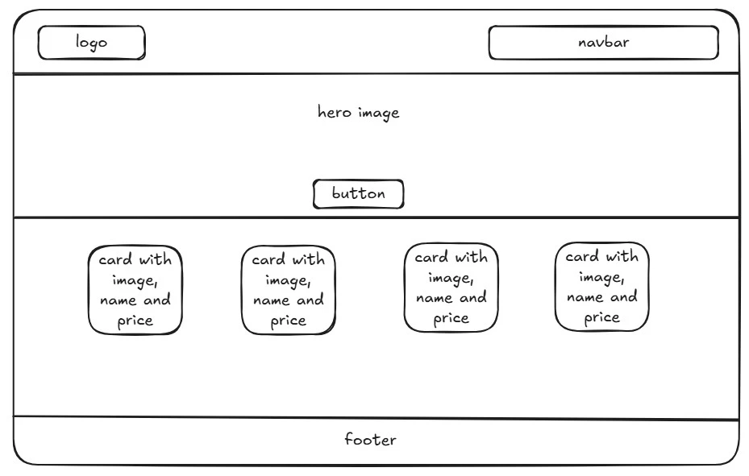

1. Site Name
MB Fly
The name combines the initials of the developer with "Fly", which tells visitors right away that the site is about fly fishing. It is short, easy to remember, and works well as a logo or favicon.
2. Site Purpose
- Present a catalog of fly fishing equipment, including rods, reels, lines, flies, and accessories.
- Help visitors compare products by category, brand, price, and skill level.
- Let visitors save favorite items and send a quote request through a contact form.
3. Scenarios
- Which rod and reel combination is the best choice for a beginner?
- How much does a complete starter kit cost, and how do I request a quote?
- Which flies work best for fishing in rivers?
4. Color Scheme
| Sample | Name and value | Where it is used |
|---|---|---|
| River green #1F4D3A |
Header and footer backgrounds, headings, and borders. | |
| Cream #F5F1E6 |
Page background and text on dark green areas. | |
| Fly orange #E07A2F |
Buttons and highlights, always paired with dark text for good contrast. | |
| Graphite #1B1B1B |
Paragraph text and text on orange buttons. |
5. Typography
- Montserrat (600 and 700): headings, the site name, and buttons.
- Open Sans (400 and 600): paragraphs, lists, tables, navigation, and form labels.
Both fonts are loaded from Google Fonts, with system sans-serif fonts as a fallback.
6. Wireframe
Home page layout for a small screen and for a larger screen.

